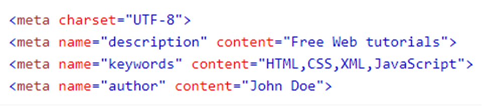
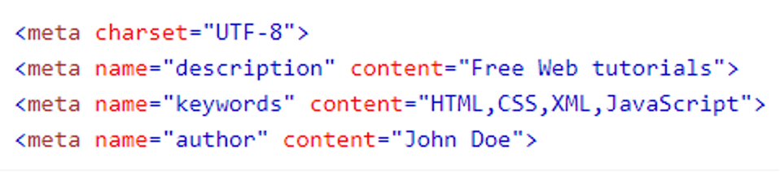

METADADOS--
Metadados são dados externos á página que são usados pelos navegadores (como exibir conteúdo), pelos mecanismos de pesquisa (palavras-chave) e outros serviços da web;
Eles são integrados à página HTML pela tag > meta >

Metadados são dados externos á página que são usados pelos navegadores (como exibir conteúdo), pelos mecanismos de pesquisa (palavras-chave) e outros serviços da web;
Eles são integrados à página HTML pela tag > meta >
